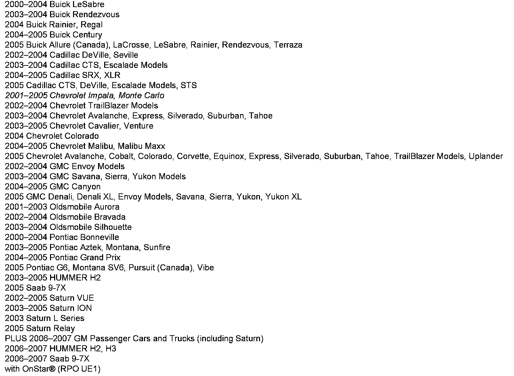

OnStar(R) - Analog/Digital System Information
INFORMATIONBulletin No.: 06-08-46-008C
Date: September 18, 2008
Subject:
Information on OnStar(R) Dual-Mode (Analog/Digital) Systems

Models
Supercede:
This bulletin is being revised to correct the model year range for the Chevrolet Impala and Monte Carlo and update the reference to GM Dealerworld. Please discard Corporate Bulletin Number 06-08-46-008B (Section 08 - Body and Accessories).
All 2000-2003 model year vehicles equipped with OnStar� from the list above were built with Analog/Digital-Ready OnStar(R) Hardware. Some of these vehicles may have been upgraded to Dual-Mode (Analog/Digital).
Certain 2004-2005 model year vehicles equipped with OnStar(R) from the list above may have been either:
^ Originally built at the factory with Dual-Mode (Analog/Digital) OnStar(R) Hardware with Dual-Mode (Analog/Digital) OnStar(R) Hardware
OR
^ Upgraded to Dual-Mode (Analog/Digital) Hardware
All 2006 model year and newer vehicles equipped with OnStar(R) were built at the factory with Dual-Mode (Analog/Digital) OnStar(R) Hardware.
If a vehicle has Dual-Mode (Analog/Digital) OnStar(R) Hardware, then the system is capable of operating on both the analog and digital cellular networks, and will not require an upgrade in connection with the cellular industry's transition to the digital network.
In order to verify the type of OnStar(R) Hardware in a vehicle, type the VIN into the VIN look-up tool, which is available at the OnStar(R) Online Enrollment website within GM GlobalConnect (for U.S. dealers) or InfoNet (for Canadian dealers).

Disclaimer